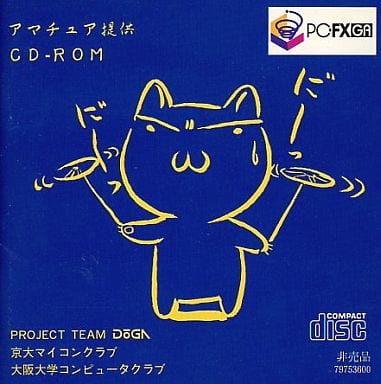

PC-FXGA Authoring Software
GMAKER Starter Kit (Ver.1.0)
Explanation of System Structure
NEC Home Electronics, Ltd.
Nov 10, 1995
Translated by Sean Aoki
Chapter 1 Introduction
The PC-FXGA Authoring Software "GMAKER" Starter Kit (shortened to GMAKER Starter Kit) is a set of software tools
to create software that runs on the PC-FXGA.
Development with Assembly Language*,
C Language
By using this GMAKER Starter Kit, you can develop software using Assembly Language*
or C
Language.
Using an Assembler* for Assembly
or a C compiler for C, an Object file can be created, which can then be bundled into an executable with a
linker. This executable runs on a PC-FXGA.
For parts requiring high performance or direct interaction with the hardware, use Assembly; for other parts,
using C, which is easier to write and is more flexible, one can be an efficient developer.
Efficient Debugging
This GMAKER Starter Kit contains a source code debugger that lets you debug the executable in machine language
and Assembly, or C source code level.
With the source code debugger, it is possible to examine the program's movement using break points, step,
trace, etc. Furthermore, in C, variable values and equation evaluation make debugging easy as well.
1.1 System Structure

Chapter 3 Actual Development Process
Here, we create model data with DoGAGENIE-1 in the "アマチュア提供 CD-ROM" disk
included with the PC-FXGA, and show the steps to show it on the display.

3.1 Example of Model Data Creation
DoGAGENIE-1
Create Model with Parts Assembler
Create AGD File with AGD Converter
Optimize AGD File with AGDL2s
Create a AGC File with AGD2AGC
The model data can be displayed by the library by taking the model created using
the DoGAGENIE-1’s Part Assembler and converting it to an AGD file with the AGD
converter, then using AGDL2S.EXE and AGD2AGC.EXE stored in \FXGA\BIN\ (by
default)
to convert it to an AGC file.
3.2 Program Example
Here is an example of using the AGC File created in 3.1, which we call MODEL.AGC
- main.c -
#include
#include
#include
#include
#include
#define PALDATSIZ (512)
#asm
seg dseg
palette_data::
;;; DoGAGENIE-1-specific pallet data
binload "genie.acd",104
align 4
model_data_length::
binload "model.agc",0,4
align 4
model_data::
binload "model.agc",4
#endasm
extern unsigned short palette_data[];
extern long model_data_length;
extern int model_data[];
void
main(void)
{
object obj;
Material material;
int angle = 0;
/* Hu6261 Screen Mode Settings */
init_nt();
set_nt_mode(line263);
{
struct NT_PLO plo;
plo.cpo0 = 0x8000; /* Fixed */
plo.cpo1 = plo.cpo2 = plo.cpo3 = 0x0000;
set_pallet_offset(&plo);
}
/* Transferring Color Pallet */
write_pallet_datas(0, palette_data, PALDATSIZ);
/* HuC6273 Settings. Please don’t change this normally. */
AGLInit();
FarlSetWindowScaleReg(128 * 2, 128, -128 * 2, 128);
FarlSetPEICMaskReg(FARL_ICMASK_I5C4);
FarlSetTEControlReg(FARL_TE_ICM | FARL_TE_LTEN | FARL_TE_SPEN | FARL_TE_BCE);
FarlValidateSwap();
dispon(bg | spr);
/* Registering Model Data */
obj.geometryTop = model_data;
obj.geometryLength = (model_data_length + sizeof(int) - 1) / sizeof(int);
/* Material Settings */
material.ambient = 0x1000;
material.diffuse = 0x6FFF;
material.specular = 0x7FFF;
obj.material = &material;
AGLSetMaterial(&material, 1);
/* Light Settings */
AGLResetLight(AGL_LIGHT0);
AGLResetLight(AGL_LIGHT1);
AGLSetLight(AGL_LIGHT0, 0xf000, 0xf000, 0x0200, 0x7FFF);
AGLRotateLightY(AGL_LIGHT0, 700);
AGLRotateLightZ(AGL_LIGHT0, 3300);
while (1) {
AGLResetCamera();
AGLTranslateCamera(0, -0x80, 0);
AGLRotateCameraX(900);
AGLPerspectiveCamera(0xffc0);
AGLZoomCamera(0x80, 0x80, 0x80);
AGLResetObj(&obj);
AGLScaleObj(&obj, 0x80, 0x80, 0x80);
AGLRotateObjX(&obj, 900);
AGLRotateObjZ(&obj, angle);
AGLTranslateObj(&obj, 0, 0, 0);
AGLFixPutObj(&obj);
AGLShot();
angle += 10;
angle %= 3600;
}
}
----------We compile and link this.
fxcc -02 -I\fxga\include -c main.c
fxlk @ind
The contents of the indirect file ind is given below:
- ind -
/cseg:8000 -o sample.ex
\fxga\lib\_startup.o
main.o
\fxga\lib\libagl.a \fxga\lib\vlib.a \fxga\lib\libfarl.a
\fxga\lib\_stack.o
Execution is done as follows. See Explanation of "FXDB.EXE" for more information.
fxdb ysample;rg